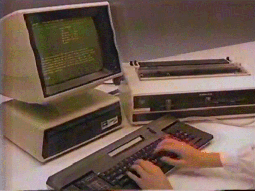

vs
Projets et méthodes chez Capgemini
Historique
Capgemini ?
Sogeti ?
- Capgemini (180k personnes)
- Capgemini Technology and Services (36k personnes)
- Services (BU)
- Custom Software Development (Skill Group)
Sogeti fondé en 1967 à Grenoble
Fusion avec CAP en 74
Fusion avec Gemini en 75
Multiples acquisitions, fusion depuis.
Aujourd’hui, 11,9 milliards d'€ CA
Recrutement
- Recrutement sur salon
- Entretiens La Défense
- Dev Suresnes
A posteriori
- Turn over
- Embauche à bas prix
- Petites écoles d’ingé
- Vendeurs de rêve au Maroc
Acte 1
Le projet unique

Premier jour

Ubika
1er projet (stage)
APEC
From scratch
POC Mobile
Equipe projet
- 1 CP/dev
- 1 archi dev
- 1 SM/dev
- 1 dev senior quelques jours/mois
- 3 devs
- 1 responsable fonctionnel
- 1 recetteur
Wow
1er projet "Agile"
Equipe technique efficace
Client impliqué
Agile ?
| Capgemini | Theodo | |
|---|---|---|
| Sprint | 3 semaines | 1 semaine |
| Fonctonnalités | Users stories + découpage équipe | Tickets unitaires, découpés |
| Validation | Recette Sprint S+1 | Au fil de l'eau |
| Démo | Démarre la cérémonie | Pas nécessaire |
| Board | Postit | Trello FTW |
Agile ?
Cap + Theodo
Tests (unitaires)
Intégration continue
Implication PO : présent au Stand up
Équipe indépendante
Limitation des dépendances extérieures
Donc c'est comme ça partout ?
- Porté par un chef de projet + SM
- Pas de méthodo généralisée
- Ex: Dérive du projet Guichet Entreprise
- Pragmatisme/Initiative pas autant développé
- Écart standard = Problème > Réaction
Acte 2
La débrouille

MGP
2 jours de formation interne Jahia...
Go faire du Jahia !
Contexte
|
Entracte
Management/évolution
Entretien annuel
Manager / Carreer Manager
Tu as fait une super année. On est content de ton travail. Mais tu comprends, en régie, on n'a pas de visibilité sur ce que tu as fait.

Acte 3
La chute

Les "autres" projets
|
 |
Entracte
L'infra
L'infra
- SVN forever
- Infra très lourde
- pas de serveur de test généralisé
- instance de Jenkins pour chaque projet (qui a des tests)
- Coût projet
Acte 4
Leur futur ?
Et pourtant, ils essaient...
Nouvelles structures
- Digital factory
- Lab' Innovation